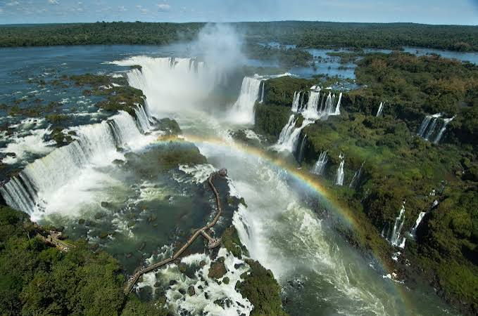
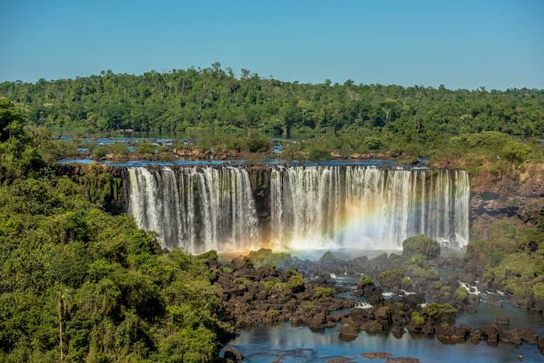
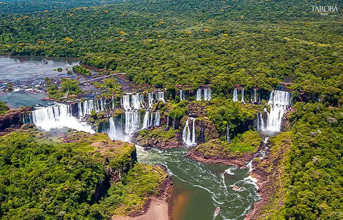

Apresentação
As Cataratas do Rio Iguaçu são uma das paisagens naturais mais bonitas e famosas do mundo. Elas estão localizadas no Rio Iguaçu, na fronteira entre o Brasil e a Argentina. Do lado brasileiro, ficam no estado do Paraná, dentro do Parque Nacional do Iguaçu. As Cataratas são formadas por centenas de quedas-d’água, sendo a Garganta do Diabo uma das mais conhecidas e impressionantes. A força das águas e a beleza da paisagem atraem visitantes de diferentes partes do Brasil e do mundo. Além de serem um importante ponto turístico, as Cataratas têm grande importância para a preservação do meio ambiente. A região possui uma grande diversidade de animais e plantas, principalmente espécies da Mata Atlântica. Por isso, o Parque Nacional do Iguaçu é fundamental para proteger a natureza e a biodiversidade da região. As Cataratas também contribuem para a economia local, pois o turismo gera empregos e movimenta hotéis, restaurantes, lojas e outros serviços. Em 2011, as Cataratas do Iguaçu foram escolhidas como uma das Novas Sete Maravilhas da Natureza, tornando-se ainda mais conhecidas internacionalmente. Portanto, as Cataratas do Rio Iguaçu são um importante patrimônio natural, turístico e ambiental. Preservá-las é essencial para que sua beleza e sua biodiversidade continuem existindo e encantando as futuras gerações.

Desenvolvimento no Paraná
As Cataratas do Rio Iguaçu são uma das maiores e mais impressionantes atrações naturais do mundo. Elas estão localizadas no Rio Iguaçu, na fronteira entre o Brasil e a Argentina. Do lado brasileiro, ficam no estado do Paraná, dentro do Parque Nacional do Iguaçu, enquanto do lado argentino estão no Parque Nacional Iguazú. As Cataratas são formadas por aproximadamente 275 quedas-d’água distribuídas por cerca de 2,7 quilômetros do rio. Entre elas está a famosa Garganta do Diabo, que é uma das maiores e mais impressionantes quedas do conjunto, chegando a aproximadamente 80 metros de altura. A formação das Cataratas aconteceu ao longo de milhões de anos, principalmente pela ação da água sobre as rochas. A erosão causada pelo Rio Iguaçu foi formando os diferentes desníveis que deram origem às diversas quedas-d’água que podemos observar atualmente. Além da beleza das Cataratas, a região possui uma grande diversidade de animais e plantas. Entre os animais encontrados no Parque Nacional estão quatis, macacos-prego, tucanos e, em algumas áreas, a onça-pintada. A vegetação é formada principalmente por espécies da Mata Atlântica, tornando o parque também muito importante para a preservação da natureza. As Cataratas do Iguaçu são um importante destino turístico e recebem visitantes de várias partes do mundo. Os turistas podem conhecer as quedas por meio de trilhas, passarelas e mirantes, que permitem observar de perto a força e a beleza das águas. Em 2011, as Cataratas do Iguaçu foram escolhidas como uma das Novas Sete Maravilhas da Natureza, reconhecimento que destacou ainda mais sua importância mundial. O nome “Iguaçu” tem origem no guarani e está relacionado à ideia de “água grande”. Portanto, as Cataratas do Rio Iguaçu são muito mais do que uma bela paisagem. Elas representam a riqueza natural da região, são importantes para o turismo e ajudam na preservação da biodiversidade. Por isso, é fundamental cuidar e preservar esse patrimônio natural para que ele continue encantando as futuras gerações.

Importância para a identidade cultural paranaense
As Cataratas do Rio Iguaçu são muito importantes para o meio ambiente, para o turismo e para a economia da região. Elas fazem parte de uma área de grande biodiversidade e ajudam na preservação da Mata Atlântica, que abriga diversas espécies de animais e plantas. Além da importância ambiental, as Cataratas são um dos principais pontos turísticos do Brasil e atraem milhares de visitantes todos os anos. O turismo contribui para a economia das cidades próximas, gerando empregos e movimentando hotéis, restaurantes, lojas e outros serviços. As Cataratas também possuem grande importância cultural e natural, sendo reconhecidas mundialmente por sua beleza. Em 2011, foram escolhidas como uma das Novas Sete Maravilhas da Natureza. Por isso, preservar as Cataratas do Iguaçu é fundamental para proteger a natureza e garantir que esse patrimônio continue sendo admirado pelas futuras gerações.
